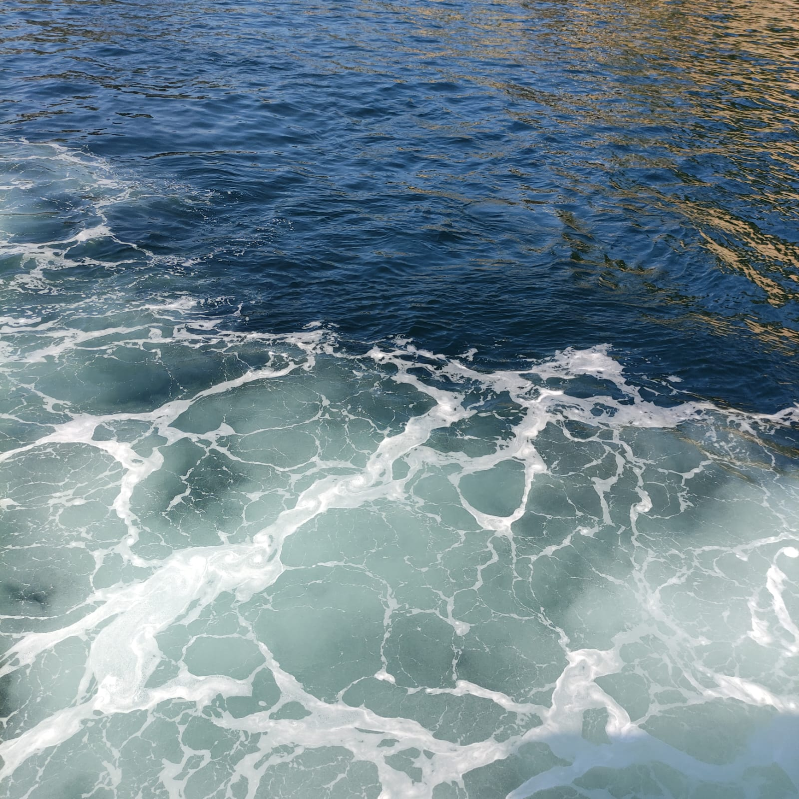
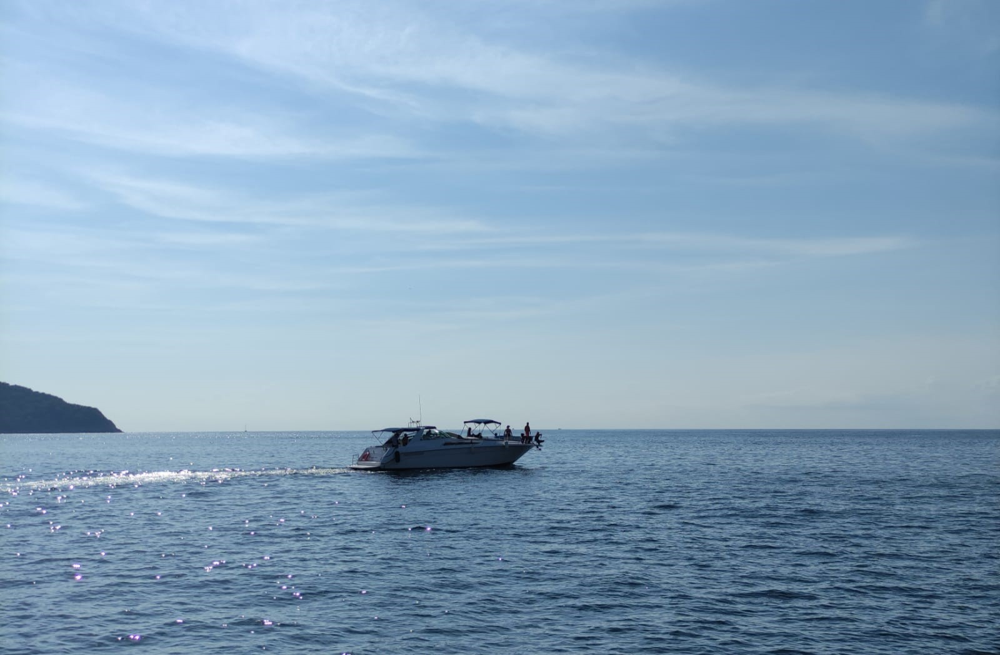
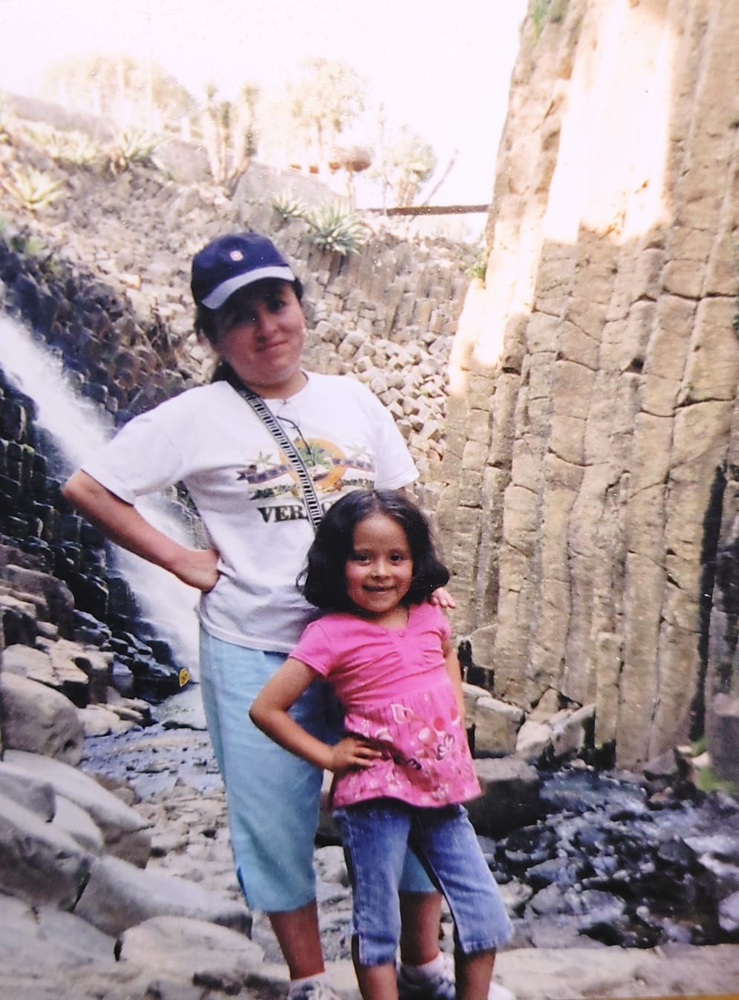

PLAYITA EN ACAPULCO (Imágenes simple png o jpg)
Cada que salgo de vacaciones me gusta tomar muchas fotos pero no las publico en redes sociales aunque sí me gustaría tenerlas por ahí, pero siento que ya perdieron el encanto porque ya tiene varios años algunas. La foto de la derecha me gusta porque se ve agua en dos tonos, uno más oscuro en la parte de arriba y otro más claro, casi turquesa, abajo. Me gusta que hay bastante espuma blanca que contrasta tan bonito con el azul, lo que da el movimiento que había cuando la tomé. Me gusta muchísimo esa foto!
La segunda foto también me gusta, de hecho la tomé en el mismo viaje que la primera. Era temprano por la mañana y salimos a caminar y me gustó como salió, natural y bonita. Y no me imagino como era estar en el yate disfrutando del movimiento que el agua hacía.
PLAYA Y FOGATA (Imágenes GIF)
Una de las actividades que me encantaría hacer es una fogata en la playa porque combina muchas cosas que disfruto: la tranquilidad del mar y la sensación de libertad que te da estar al aire libre. La playa por sí sola ya es un lugar especial, pero me gustaría vivir la experiencia de acompañarla de una fogata. Pienso que todo se vuelve aún más mágico: el sonido constante de las olas de fondo, el calor de la fogata y el ambiente que se crearía. Además, tengo la expectativa de que sea como en las película: sentarse alrededor del fuego, platicar y quemar bombones.
Situaciones así son el momento ideal para desconectarse de la rutina y reconectar con la gente que nos rodea.
PAU Y YO (Imágenes flotantes)
Paulette es mi única hermana y es la menor. Tiene 13 años y está estudiando el segundo grado de secundaria.
Es una hermana estupenda, peleamos como cualquier par de hermanos pero nada pasa más allá de eso. Es mi adoración y más que una hermnana es como una hija y me ha dicho que para ella también soy una segunda mamá. Es mi adoración aunque esté en su adolescencia y sea un poco irritable (por no decir mucho jaja). He tratado de hacer buenos recuerdos con ella y que pasemos tiempo de calidad juntas porque ahora que vivimos separadas pues ya se nos complica. Fue un cambio drástico pasar de estar juntas todos los días a vernos solo una vez al mes aproximadamente. La foto fue una salida que tuvimos el mismo día que me venía de regreso a Puebla la última vez que fui. Nos divertimos mucho y me gustaría hacer muchas más cosas con ella cuando voy a Zacatlán a visitarlas: ir a un café, comer, ir al parque y actividades donde pasemos tiempo una con la otra.
Ella entiende que se me complica ir seguido, pero sé muy bien que le gustaría pasar mucho más tiempo conmigo. Y gracias a las reflexiones que he hecho, procuro aún más nuestra convivencia.
PEQUITA (Imágenes con background)
Pequita fue una mascota que tuvimos solamente por unos meses. Así como llegó de la nada, también se fue. Era una gatita que le encantaba jugar y arañar a Pau, siempre tenía rasguños de ella pero porque también la provocaba jaja pero después se quejaba de que Peca la molestaba. Recuerdo que una de las últimas veces que la vimos estaba dándole de comer Pau y como no dejaba de comer, la tuvimos que sacar de la cocina y cerrar la puerta, pero ahí estaba maullando para que la dejáramos pasar otra vez y eso hicimos, caímos siempre en sus encantos.
TIKTOK (Imágenes con ícono)
Tiktok es mi red social favorita, me divierte mucho el contenido que he visto ahí. Gracias a esa plataforma he aprendido tendencias, tiendas nuevas, productos buenos y hacks también muy buenos. En medida es una buena red social porque es adictivo pasar horas y horas ahi.

Mamá e hija (Imágenes con filtro)
En esta foto estoy con mi mamá. No tengo el recuerdo de ese momento, pero estábamos en los Prismas Basalticos, Hidalgo. Desde chiquita mis papás han viajado mucho conmigo, procuraban mi diversión.
Me gusta mucho esa fotografía porque se me hace tan linda y coqueta! Es una foto muy única y con mucho valor sentimental porque mi mamá es lo más grande que tengo además de mi hija Pau. Entre ellas dos son mi todo y estoy sumamente agradecida por tenerlas.
